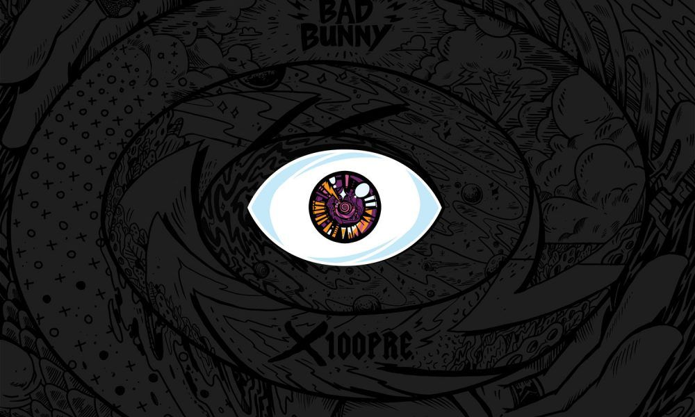

YHLQMDLG
Segundo album
- Yo perreo sola
Yo perreo sola Ante' tú me pichaba' (Tú me pichaba') Ahora yo picheo (mmh, nah) Antes tú no quería' (No quería') Ahora yo no quiero (mmh, no) Ante' tú me pichaba' (-chaba') Ahora yo picheo (Ja, ja) Antes tú no quería' (Ey) Ahora yo no quiero, no, tranqui Yo perreo sola (Hmm, ey) Yo perreo sola (Perreo sola; ja, ja; mmh-mmh) Yo perreo sola (Ja, ja, mmh; ey) Yo perreo sola (Perreo sola) Okay, okay, ey, ey, ey Que ningún baboso se le pegue (No) La disco se prende cuando ella llegue (¡Wuh!) A los hombres los tiene de hobby Una malcriá' como Nairobi (Ja, ja) Y tú la ve' bebiendo de la botella (Ey) Los nene' y las nena' quieren con ella Tiene má' de veinte, me enseño la cédula (Ajá) Ey, del amor e' una incrédula (¡Wuh!) Ella está soltera antes que se pusiera de moda (Ey) No cree en amor desde "Amorfoda" (No) El DJ la pone y se las sabe todas Se trepa en la mesa y que se jodan (Wuh) En el perreo no se quita (¡No!) Fuma y se pone bellaquita Te llama si te necesita Pero por ahora está solita Ella perrea sola (Ey, ey, ey, ey, ey, ey) Ella perrea sola (Perrea sola, ella perrea sola, sola, sola) Ey, ella perrea sola (Ey, ey, ey, ey, ey, ey) Ella perrea sola (Ella perrea sola, ella perrea sola) Tiene una amiga problemática Y otra que casi ni habla, pero las tre' son una' diabla' (Prr) Y hoy se puso minifalda Los phillie' en las Louis Vuitton los guarda Y me dice "papi" (Papi, sí; yes, yes) 'Tá bien dura como Natti (Ah) Borracha y loca, a ella no le importa (Wo) Vamo' a perrear, la vida es corta, ey (Ho) Y me dice "papi" (Papi, sí; yes, yes) 'Tá bien dura como Natti (Ah) Despué' de las doce no se comporta (Ey) Vamo' a perrear, la vida e' corta (Woo) Ante' tú me pichaba' (Tú me pichaba') Ahora yo picheo (Hmm, nah; loco) Ante' tú no quería' (¿Pero cuándo yo dije eso?) Ahora yo no quiero (Pero, pero; no) Ante' tú me pichaba' (Nah) Ahora yo picheo (Yo nunca te he picha'o, mami) Ante' tú no quería' (Ay, Dio') Ahora yo no quiero, no, tranqui Yo perreo sola (Mmh, ey) Yo perreo sola (Perreo sola; ja, ja; mmh-mmh) Yo perreo sola (Ja, ja, mmh; ey) Yo perreo sola (Perreo sola)
- Una vez
Una vez Lo nuestro no te conviene, eh Pero él ya no te entretiene, eh Sé que te incito a pecar, lo tratas de controlar Pero no se detiene, eh Y déjame sentirte una ve', por si no te vuelvo a ver Luego lo sigo normal con mi vida, y tú la tuya con él Pero déjame sentirte una ve' (sentirte una ve') Por si no te vuelvo a ver Luego lo sigo normal con mi vida Pe-pe-pe-pero dale escápate Y si alguien te tápate, y allá abajo acicálate Porque hoy te vas pa' casa y casi ni traté Y si tienes problemas, conmigo pégate Que quiero ponerte a gritar mi nombre pa' que lo recuerde' Siempre anda conmigo cuando el novio se le pierde Carita de nena buena, nunca pierde Conmigo se siente cabrón, él es solo un resuelve ¿Y qué vas a hacer si me pego? Y te jalo por el pelo Pa' mí que te va a gustar Solo déjate llevar Y déjame sentirte una ve', por si no te vuelvo a ver Luego lo sigo normal con mi vida, y tú la tuya con él Pero déjame sentirte una ve' (sentirte una ve') Por si no te vuelvo a ver Luego lo sigo normal con mi vida, y tú la tuya con él Y tú la tuya con él (y tú la tuya con él) Yeh-yeh-yeh-yeh (y tú la tuya con él, y tú la tuya con él) Ey, baby yo quiero chingarte, te lo confieso Pero me conformo solo con un beso Yo no creo en el amor ni en nada de eso Pero no sé por qué ahora siempre que rezo Le pido a Dios que me deje verte esnúa' Tú te vas pero esta bellaquera continúa Me pongo celoso cuando hablas de él, shh Dime qué vamos a hacer Yo solo quiero hacerlo hasta el amanecer Porque sé que pronto' va' a desaparecer Si fuera por mí te llevaría de gira Creo que voy a extrañar la forma esa en que me mira' Con cara de nena buena pero bellaquita Eso' ojitos que los poderes me quita' Quiero verte brincando toa' mojaíta' Y tu cara cuando yo te pase la lengüita Y te traigo en whiskicito con agüita tónica Yo sé que no ere' virgen, que no eres católica Lo más que me gusta e' que tú eres media complica' Quiero ver como tus ojos se ponen con Indica Verdecitos, colorao', aoh No sé si se nota, me tienes desesperao' Soñando contigo toa' las noches desvelao' Déjame probarte y cada cual por su lao', eh ¿Y qué va' a hacer si me pego? Y te jalo por el pelo Yo sé que te va' a mojar Solo déjate llevar Y déjame sentirte una vez (sentirte una ve') Por si no te vuelvo a ver Luego lo sigo normal con mi vida Y tú la tuya con él (ah)- La santa
- A tu merced
- Ignorantes
- Vete

EL ULTIMO TOUR DEL MUNDO
Cuarto album
- SORRY PAPY
SORRY PAPI La tierra tiembla cuando te mueve' Si e' por mí te doy de vierne' a jueve', eh No hay quien la releve Si no e' un diez, e' un nueve punto nueve La nena es top, cacha to' lo' drop Chiquita y peligrosa como una Glock Ya casi no sube storie', mucho meno' TikTok Yo soy fan de ella, estoy pendiente de to' De to' su' movimiento', ver ese culo e' un evento Ven, jódeme lo' sentimiento' Y te compro un apartamento Móntate conmigo en el Ferrari, que me sobra un asiento Tú va' a ser mía, lo presiento Aunque detrás tienes que tener dosciento' Te vo'a tirar de mil quiniento' Dime a ve' Sorry, papi Yo no soy tu mami Yo, yo hago lo que yo quiera Y también tengo lo mío en la cartera Sorry, papi Yo no soy tu mami Yo, yo hago lo que yo quiera Y también tengo lo mío en la cartera Nah, ¿cómo va' ser? Dime que tengo que hacer Ya mismo va a amanecer A ti te doy hasta la clave de mi cel' Quiero comerte como Cell ¿Cómo te llama'? No' podemo' conocer Te juro será un placer Eso' ojito' te los hicieron a pincel Otra como tú no vuelve a nacer Ese culo e' arte de exhibición Si quiere' yo pago una subscripción "Diosa", esa es tu definición Te quiero con to' y la bendición Única, no tiene gemela Tú te merece' caminar en pasarela Fuma y los ojos se ponen como espinela Quiero hacerte un gol y que suenen la' vuvuzela' Alguno' piensan que es de Venezuela Pero es de PR, ahí está la candela Mami, tú ere' mi santa, yo te prendo vela' Esperando a que me quiera' So-so-sorry, papi Yo no soy tu mami Yo, yo hago lo que yo quiera Y también tengo lo mío en la cartera Sorry, papi Yo no soy tu mami Yo, yo hago lo que yo quiera Y también tengo lo mío en la cartera
- TE MUDASTE
TE MUDASTEPasa el tiempo (pasa el tiempo) Y no te veo (y no te veo) Dime dónde estás, dime dónde estás (ah-ah) Que extraño el bellaqueo (extraño el bellaqueo) Las noches de perreo (las noches de perreo) Dime dónde estás (dime dónde estás), dime dónde estás Que ando mirando la foto de cuando chingamos Bonitos recuerdos de cuando nos escapamos Nos comimo' en el carro, al cuarto ni llegamos, eh Desde que te desnudaste (uh-uh) A mi mente te mudaste (-te, -te) Estoy puesto pa' repetir lo de tú y yo en el balcón Del hotel con un blunt (blunt, blunt) No te encuentro en ninguna aplicación Dime si fue que volviste con aquel cabrón Porque a mí no me molesta ser tu chillo Tú no eres monja ni yo monaguillo Me tiene' loco, ese culo 'tá bien pillo Si se abre un OnlyFan' la baby se hace millo Y ella e' loca, nunca le haga cosa' con mi boca Hace tiempo no la veo y ya toca, ey (ah-ah) Me tienes mirando la foto de cuando chingamos Bonitos recuerdos de cuando nos escapamos Nos comimo' en el carro, al cuarto ni llegamos, eh Desde que te desnudaste A mi mente te mudaste (te mudaste-te-te)- La santa
- A tu merced
- Ignorantes
- Vete
X100pre
Primer album
- Otra noche en miami
Otra noche en miami Yeah, yeah Diez en punto de la noche y salgo como de costumbre Prendas en diamantes que ceguen cuando me alumbre Me diferencio de la muchedumbre A mi estilo puede que no te acostumbre' No sé si irme en el Mercedes o en el Maserati Modelos extranjeras que me dicen: "papi" Están tirando al cel, ya me quieren ver (Ah) Seguramente, ya están locas por coger Pero soy yo quien les llevo la champaña Si no es con Moët, la rubia no se baña Me voy de viaje y a las dos hora' me extraña O mejor dicho, al dinero que me acompaña Soy todo un fasa en la ciudad del sol No voy a tiendas, pues yo soy dueño del mall Soy Cristiano después de meter un gol Tengo a francesas hablándome en español Y siempre mucho Gucci, mucho Ferra, Louis Vuitton Yo no uso Retro, pero tengo to'a la colección Pa'l Khalifa Kush tengo la conexión Pa'l avenue Miami Beach e' mi dirección (Ah) Todo es superficial, nada real Nada raro que el dinero no pueda comprar Penthouse con vista al mar Es lo único que tengo pa' poder pasar Otra noche en Miami (Yeh) Otra noche en Miami Otra noche en Miami Otra noche en Miami Otra noche sin ti Otra noche sin ti Supuestamente, ya yo te olvidé Pero son las once y treintaicuatro y de ti me acordé (Yeh) No te veo desde que me mudé Pero soñé contigo anoche y te saludé Tratando de sellar las cicatrices He estado con modelo' y con actrices Seguramente, yo nunca las quise Seguramente, no sé ni por qué lo hice Y en el garage está el Bentley que tanto querías Me monto pa' fumar, imaginando que lo guías Ya me cansan los threesome' y las orgías Ya me cansa que mi vida siga vacía Y recuerdo que me lo decías Que si no cambiaba, te perdía Como quisiera volver a esos días Ahora que soy rico, no tengo lo que tenía Pues mi Rolex no brilla igual que tu sonrisa Y con estas putas no me gusta compartir la frisa Si piensas volver, me avisa' Mientras yo sigo solo Otra noche en Miami (Yeh) Otra noche en Miami Otra noche en Miami Otra noche en Miami Otra noche sin ti Otra noche sin ti Otra noche sin ti (Otra noche sin ti) Otra noche sin ti (Otra noche sin ti, yeh)
- Una vez
Una vez Lo nuestro no te conviene, eh Pero él ya no te entretiene, eh Sé que te incito a pecar, lo tratas de controlar Pero no se detiene, eh Y déjame sentirte una ve', por si no te vuelvo a ver Luego lo sigo normal con mi vida, y tú la tuya con él Pero déjame sentirte una ve' (sentirte una ve') Por si no te vuelvo a ver Luego lo sigo normal con mi vida Pe-pe-pe-pero dale escápate Y si alguien te tápate, y allá abajo acicálate Porque hoy te vas pa' casa y casi ni traté Y si tienes problemas, conmigo pégate Que quiero ponerte a gritar mi nombre pa' que lo recuerde' Siempre anda conmigo cuando el novio se le pierde Carita de nena buena, nunca pierde Conmigo se siente cabrón, él es solo un resuelve ¿Y qué vas a hacer si me pego? Y te jalo por el pelo Pa' mí que te va a gustar Solo déjate llevar Y déjame sentirte una ve', por si no te vuelvo a ver Luego lo sigo normal con mi vida, y tú la tuya con él Pero déjame sentirte una ve' (sentirte una ve') Por si no te vuelvo a ver Luego lo sigo normal con mi vida, y tú la tuya con él Y tú la tuya con él (y tú la tuya con él) Yeh-yeh-yeh-yeh (y tú la tuya con él, y tú la tuya con él) Ey, baby yo quiero chingarte, te lo confieso Pero me conformo solo con un beso Yo no creo en el amor ni en nada de eso Pero no sé por qué ahora siempre que rezo Le pido a Dios que me deje verte esnúa' Tú te vas pero esta bellaquera continúa Me pongo celoso cuando hablas de él, shh Dime qué vamos a hacer Yo solo quiero hacerlo hasta el amanecer Porque sé que pronto' va' a desaparecer Si fuera por mí te llevaría de gira Creo que voy a extrañar la forma esa en que me mira' Con cara de nena buena pero bellaquita Eso' ojitos que los poderes me quita' Quiero verte brincando toa' mojaíta' Y tu cara cuando yo te pase la lengüita Y te traigo en whiskicito con agüita tónica Yo sé que no ere' virgen, que no eres católica Lo más que me gusta e' que tú eres media complica' Quiero ver como tus ojos se ponen con Indica Verdecitos, colorao', aoh No sé si se nota, me tienes desesperao' Soñando contigo toa' las noches desvelao' Déjame probarte y cada cual por su lao', eh ¿Y qué va' a hacer si me pego? Y te jalo por el pelo Yo sé que te va' a mojar Solo déjate llevar Y déjame sentirte una vez (sentirte una ve') Por si no te vuelvo a ver Luego lo sigo normal con mi vida Y tú la tuya con él (ah)- La santa
- A tu merced
- Ignorantes
- Vete

Las que no iban a salir
Tercer album
- Bye me fui
Bye me fui Viniste buscándome (buscándome) Porque te fallaron de nuevo (de nuevo), yeh eh Viniste buscándome (buscándome) Pero ya se acabó ese juego (ese juego), yeh eh Porque ya me cansé, eh eh, eh eh eh De que no valores mis brazos, mis brazos Y ya me cansé, eh eh, eh eh eh De solo ser por si acaso, un por si acaso Dile adiós a tu mejor opción Bye, me fui (me fui), me fui (me fui) Dile adiós a tu mejor opción Bye, me fui (me fui), me fui (me fui) Eh eh eh Y nadie sabe lo que tiene hasta que lo pierde Y tú ni quisiera va' a saber Que cómo yo nadie te va a querer Baby, sobre mí ya no tiene' poder Y tú que siempre quería' un amor de fantasía, como lo' unicornio' Pero solo te dieron el cuerno Otra diosa má' que prefirió el infierno Que ese cabrón te haría daño, eso era obvio Y no es que yo crea en el amor eterno Pero pensando en si está' bien, ya yo ni duermo Tu mai' loca de que yo sea su yerno Y yo esperando como un tonto, ya me odio Pero ya me cansé de ser el alterno Y de lo' verano' que terminan en invierno Quizá' es que piscis no mezcla con capricornio O que el amor a media' se ha vuelto moderno, eh Y si e' real yo no lo oculto, eh Si ere' mi diosa, te hago un culto Pero te acostumbraste a los insulto' Y aunque muera de gana' no podemo' verno', eh Un día sí, un día no, eso no e' tenerno' Hace tiempo no llamaba' pa' comerno' Y hoy vienes buscándome (buscándome) Porque te fallaron de nuevo (de nuevo), yeh eh Viniste buscándome (buscándome) Pero ya se acabó ese juego (ese juego)
- Una vez
Una vez Lo nuestro no te conviene, eh Pero él ya no te entretiene, eh Sé que te incito a pecar, lo tratas de controlar Pero no se detiene, eh Y déjame sentirte una ve', por si no te vuelvo a ver Luego lo sigo normal con mi vida, y tú la tuya con él Pero déjame sentirte una ve' (sentirte una ve') Por si no te vuelvo a ver Luego lo sigo normal con mi vida Pe-pe-pe-pero dale escápate Y si alguien te tápate, y allá abajo acicálate Porque hoy te vas pa' casa y casi ni traté Y si tienes problemas, conmigo pégate Que quiero ponerte a gritar mi nombre pa' que lo recuerde' Siempre anda conmigo cuando el novio se le pierde Carita de nena buena, nunca pierde Conmigo se siente cabrón, él es solo un resuelve ¿Y qué vas a hacer si me pego? Y te jalo por el pelo Pa' mí que te va a gustar Solo déjate llevar Y déjame sentirte una ve', por si no te vuelvo a ver Luego lo sigo normal con mi vida, y tú la tuya con él Pero déjame sentirte una ve' (sentirte una ve') Por si no te vuelvo a ver Luego lo sigo normal con mi vida, y tú la tuya con él Y tú la tuya con él (y tú la tuya con él) Yeh-yeh-yeh-yeh (y tú la tuya con él, y tú la tuya con él) Ey, baby yo quiero chingarte, te lo confieso Pero me conformo solo con un beso Yo no creo en el amor ni en nada de eso Pero no sé por qué ahora siempre que rezo Le pido a Dios que me deje verte esnúa' Tú te vas pero esta bellaquera continúa Me pongo celoso cuando hablas de él, shh Dime qué vamos a hacer Yo solo quiero hacerlo hasta el amanecer Porque sé que pronto' va' a desaparecer Si fuera por mí te llevaría de gira Creo que voy a extrañar la forma esa en que me mira' Con cara de nena buena pero bellaquita Eso' ojitos que los poderes me quita' Quiero verte brincando toa' mojaíta' Y tu cara cuando yo te pase la lengüita Y te traigo en whiskicito con agüita tónica Yo sé que no ere' virgen, que no eres católica Lo más que me gusta e' que tú eres media complica' Quiero ver como tus ojos se ponen con Indica Verdecitos, colorao', aoh No sé si se nota, me tienes desesperao' Soñando contigo toa' las noches desvelao' Déjame probarte y cada cual por su lao', eh ¿Y qué va' a hacer si me pego? Y te jalo por el pelo Yo sé que te va' a mojar Solo déjate llevar Y déjame sentirte una vez (sentirte una ve') Por si no te vuelvo a ver Luego lo sigo normal con mi vida Y tú la tuya con él (ah)- La santa
- A tu merced
- Ignorantes
- Vete
- Una vez
- Una vez
- TE MUDASTE
- Una vez